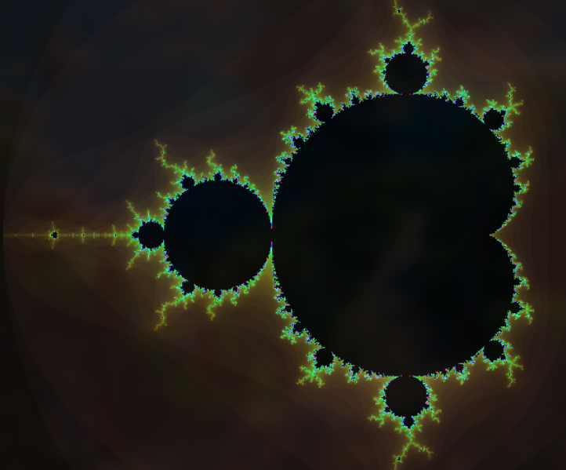
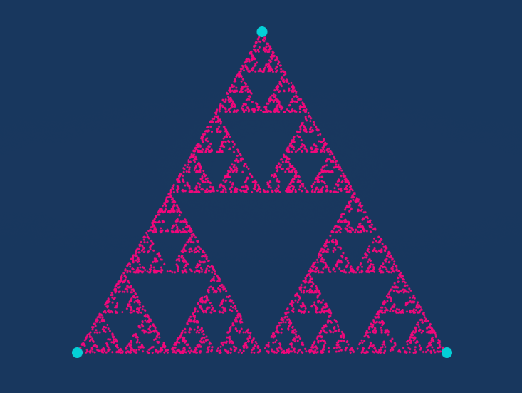
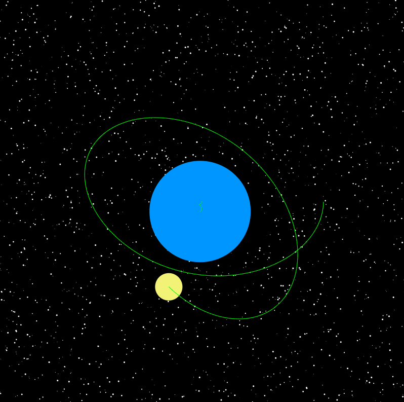
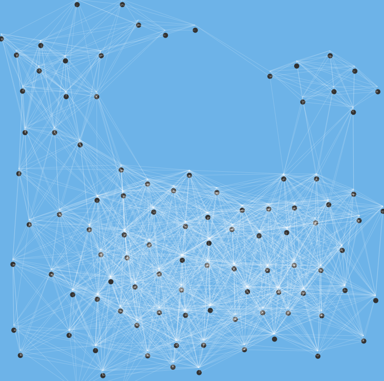
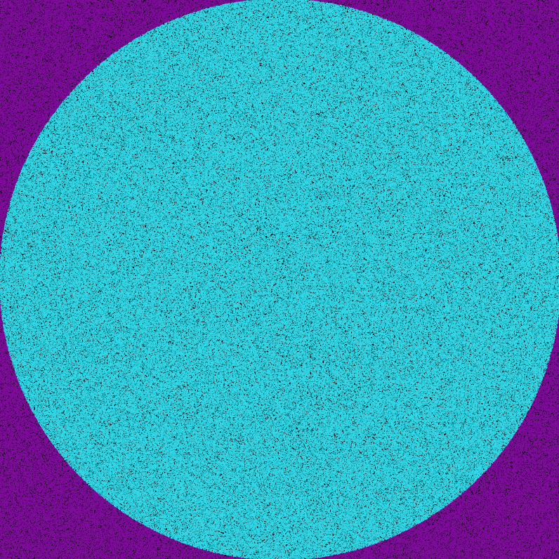

A showcase of simulations I created during my first year at university using the P5.js library. It made the graphics easier to handle, so I could focus on how the simulations actually work.
Mandelbrot Set

Sierpiński triangle

Planetary System

Simulating bird flocking with Boids

Estimating π with random points (Monte Carlo)
